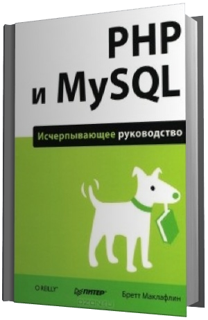

пожалуй язык Smarty нашел бы здесь где развернуться
PHP - Hypertext Processor
идентификатор. сценарий.
Sublimetext 3
Ctrl+[
Ctrl+] добавить/убрать отступ
// камент в стиле С
where `yar` is not null // где отличие от null
С версии 5.5 вместо mySQL юзает mysqli
# камент в стиле unix bash
чувство регистра
$a=$b=1;// аналог $a=1; $b=1;
\$ - доллар экранировано в одинарных кавычках
phpversion() - версия 5.5.38 или 5.5.38
// через адр строку
// эта страница
// если поставить + то уродует get запрос
www.cyberduck.ch - FTP клиент, Веб-сервер
c:\php - папка с php
Путь в системные переменные
cmd - и в ней набери
cd c:\php
php -S localhost:8000
Это стартует сервер-веб, встроенный в php
Должен ответить
PHP7.1.8 Development Server Started at Mon Aug 21 22.28.10 2017
listeting on http://localhost:8000
Document root is c:\php press Ctrl-C to quit
php -version
PHP 7.1.8 (cli)(built: Aug 1 2017)
(NTS MSVC14 (Visual C++ 2015) x86)
Copyright (c) 1997-2017 The PHP Group Zend Engine v3.1.0 Copyright (c) 1998-2017 Zend Technologies

Бретт Маклафлин
22.08.2017
стр.42 I приложение
Глюк: в консоли cmd вместо русских букв - пробелы!
Буду избегать юзания русских букв.
is_int(x)
Типы переменных
int
целое
-2147483648 +2147483647
double
веществ
string
array
массив, список
object
bool
логич
true, false
link
ссылка
is_nuimeric() - число
gettype($x) - вернет строку с описанием переменной
"integer"...."boolean" - значение
resource - ресурс, запрос MySQL
NULL - не инициализирована
unknown type - определить не удалось
Инициализация:
$a=50*($c=7)*$c;// аналог $c=7; $a=50*$c*$c;
Open Server 5.2.2
24.8.17 Хауди Хо
Basic 237Мб
Запустить
Невозможно занять порт 3306 поскольку он уже используется mysqld.exe
Сбой запуска!
Лезу в настройки OpenServer и меняю порт MySQL на 3309.
в браузер ввожу: localhost
вуаля! Страница отобразилась!
Open Server Panel работает:-)
21:41 Apach
Иди в папку c:\OSPanel\domains и создай там папку test.ru
Там создай index.html с каким-нибудь содержимым. Перезапусти Open Server. В браузере набери:
http://test.ru [Enter]
15:57 Должен отобразиться твой html. Теперь удаляй html и создавай index.php
<?php
echo 'Привет друг!'
?>
В адресной строке браузера опять http://test.ru [Enter]
26:37 Вуаля. отобразился php!
1:07:00 Ветвление
if ($name=='A')
{echo 'Привет!';}
else
{echo 'Ты кто?';}
1:09:00<,>,<=,>=,==,!=
операторы сравнения
and or
1:10:00 логические условия
100
test $a
test 100
Апостроф - текст
Кавычки - переменные
1:26:00
Функции
abs echo abs(-30); // 30
round echo round(50.35); // 50
ceil echo ceil(50.11); //51
floor echo float(50.99);// 50
rand echo rand(0,100)// 51
min, max echo min(5,7,10,106); //5
function big_biger($a,$b)
{if($a>$b){echo $a;}else{echo $b;}
echo '<br>';}// use: big_biger(10,20)//20
return $a; После ретурна код не исполняется
Конкатенация
Оператор точка
echo $a.' '$b;
Ещё точка отделяет десятичную часть числа 50.11
Учим PHP за 1 час > Часть 2 https://www.youtube.com
Работа с СУБД
->Дополнительно->PhpMyAdmin
Пользователь: root
Пароль: <нету>
127.0.0.1/OpenServer/phpmyadmin/index.php
Дефолтов нет. Даже Амиго заходил
Защита от самого себя
Сервер 127.0.0.1:3309
Тема: pmahomme
Раздел: Базы данных. Три по умолчанию, они системные
имя, кодировка(сравнение utf8_general_ci), создать
База данных test_db
Таблица articles
имя
тип
n-значность
По умолч
Сравнение
Атрибут
Null
Индекс
AI
Камент
уникальный
id
int
11
имя статьи
title
varchar
255
текст статьи
text
text
категория
categoria
int
11
дата публикации
public
DATETIME
Просмотров
view
int
11
[сохранить]
#1089 - некорректная часть ключа
! Ошибка запроса
#1075 - некорректное определениие таблицы. Может существовать только один автоинкрементный столбец и он должен быть определен как ключ.
На вкладке Структура
пречислены все поля Нажми и где-то там ещё пока к имени поля 'id' не добавятся два ключа Что будет означать что поле первичное и ключевое. Потом делай его Автоинкремент. Жми (редактировать) и ставь галочку Autoincrement
OSPanel\userdata\MySQL5.6\phote ---БД
db.opt 1кб
fote.frm 9кб
fote.ibd 112кб
Вкладка Вставить. Добавляет строки (записи) в таблицу.
id
title
Что мы делаем?
text
Бла бла бла
cate
publi
2017.01.01
view
0
Заполняем эти поля и радуемся
Таблица каммента (3) coment
id
INT
11
primary
autor
varechar
100
Null
text
text
public
DATATIME
id2
INT
11
Crud
41:22
create
read
update
delete
INSERT INTO `cate` (`name`) #имя таблицы поле
VALUES ('Природа'); # имя создаваемой категории
структура SQL
Поле дата заполняется функцией NOW()
Используем язык SQL
on duplicate key update - гибрид создания и редактирования см.89
cRud
SELECT * FROM art // выбрать все поля с таблицы
SELECT id,title,view FROM art // только поля
SELECT * FROM arti WHERE `title`='Охота'
Сортировка по колву просмотров
SELECT *FROM arti ORDER BY view
-'-'-'-'-'-'-'-'-'--'-'--'-' DESC LIMIT - ограничить колво результатов
OFFSET - для пагинации 1-10 на 1-ую страницу на 2-ой 11-20 и т.д.
1:00:00
WHER - ORDER-LIMIT Последовательность
crUd
1:01:00
UPDATE `art` SET `title`='План чего' WHERE id=2;
Меняет название поля записи, т.е. название статьи
UPDATE `arti` SET `view`=60 WHERE id=2;
Задал колво просмотров для строки 2
,`title`='upda'
cruD
1:06:00
DELETE FROM `arti` WHERE id=7
или так
id=7 OR id=8
или так
`fext`='fafa' AND `view`=0
Подключение БД
10.9.2017
<?php
$cu=mysqli_connect("127.0.0.1","root","","test_db");// имя бд
if (!$cu){
echo 'kino ne budet';
exit;
}
?>
***
Связь PHP с СУБД ауди Хо
connect
название сервера '127.0.0.1'
имя юзера root
пароль
имя БД test_db
die() // убить скрипт
exit
exit()
mysqli_connect
mysqli_query - вернет сущность
$r=mysqli_query($cu,"SELECT * FROM `arti`");
$r1=mysqli_fetch_assoc($r); // вернёт одну запись
print_r($r1); // вывод записи
while (($i=mysqli_fetch_assoc($r)))// пройти по всем записям
{print_r($i);
echo '<br>';}
mysqli_close($cu) // закрыть соединение с БД
Вывод инфы с БД в виде списка <ul>
26.08.2017
<ul>
<?php
while (($i=mysqli_fetch_assoc($r)))
echo 'li'.$i[title].'</li>';
?>
</ul>
* темные круги
* что мы делаем
21
mysqli_num_rows($r)
колво запишет в результате
$n=mysqli_query($cu,"SELECT * FROM `arti` WHERE `cate`=".$i['id'])
$n=mysqli_query($cu, #беру сущность
"SELECT COUNT('id') AS `total` FROM `arti` WHERE `cate`=".$i['id']);
$n2=mysqli_fetch_assoc($n);
из сущности получаю запись
print_r($n2); exit(); вывод записи, выход
нетрадиционный способ
Array([count(*)]=>1)
страйк по производительности слабый
$i - ассоциативный массив
Даты в PHP
это UNIX
Имеется в гугле
[] - необязательный аргумент
() - обязательный аргумент
echo date();
date('d.m.Y')
01-12,4 цифры
H - часы 24-часов.формат
i - минуты
s - секунды
Y - Вай
ТаймСтамп TimeStamp - эпоха UNIX
1970.01.01 секунды прошедшие
$t=strtotime('2014-12-10 14:00:00');
$d=time()-$t;
echo(($d/60)/60/)/24);// разница между датами
const OP='24-06-2019';// Акция, попадание даты в акцию
if (date('d-m-Y')==OP) echo "Привет, друг!";
Array([log]=>'god' [password]=>'123')
ассоциативный массив Ассоциативный
include('includes/db.php');
C:\OSPanel\domains\test.ru\includes
у клиента
form inet
на сервере
hand
db
handl.php
Обработчик action формы
$pass=$_POST['pass'];
$count=mysqli_query($connection,"SELECT * FROM `users` WHERE `login`=$login AND `pass`=$pass");
// обязательно двойные, чтобы раскрыть переенные
интерполяция
Warning mysqli_num_rows() expects parametr 1 to be mysqli_result, object given in
c:\OSPanel\domains\test.ru\handle.php on line 10
if mysqli_num_rows($count)==0){}
У хо тоже =)
Нужны апострофы (одиннарные кавычки) у $log и $pass
Лол, а у меня опечатка была SELET вместо SELECT
boolean
Ручной запрос в БД
27,08,2017
Иди в phpmyadmin. Всвою базу и на вкладку SQL.
В поле текстовое введи запрос типа, который хочешь проверить на ошибки и жми [Вперед]
Ошибки будут показаны внизу на розовом фоне.
Либо сбоку текстового поля
Конфигурационный файл
Корень проекта
Подключение файла php
include просто подключает
include_once одиночное подкл
require если файл ненайден то скрипт убьется
require_once если был подключен, то не подключит
once - чтобы дважды не подключился
16:36
includes/config.php
<?php # конфиг подключ к index.php
require "includes/config.php";
?>
<title><?php echo $config[title];?></title>
href="/" - ведет на главную страницу
target=_blank - откроет в новом окне
23:48
сайдбар
<img src=i:/ty.png'>
абсолютный путь. В php не отобразится картинка.
В html - отобразится
Для php лучше указать относительный путь
<img src='pu.png'>
mb_substr()- режет строку
(x,0,50,'utf-8')
первые 50 символов
strip_tags() - выстригает теги
$at_['text'] текст статьи
Превращение сущности в массив
$c=mysqli_query($cu,#пихаю в сущность всю таблицу
"SELECT * FROM `arti`");
$a=array();#создал массив
while ($i=mysqli_fetch_assoc($c))#цежу сущности
{$a[]=$i;#добавляю в массив запись
}
$art_cat=false;
foreach ($a as $i){#перебор массива
if $i['id']==$j['cate'])#номер категории совпал с ним же
{$art_cat=$i;#запись присвоил
break;#выход
}
}
$art=mysqli_query($cu,// вернет 5 самых просмотриваемых статей сайта
"SELECT * FROM `arti`
ORDER BY `view`
DESC LIMIT 5");
Футер в отдельный файл Аватарка с помощью сервера Граватар
MD5
echo md5($i['email']); ?>
$art=mysqli_query($cu,// вернет страницу по номеру
"SELECT *FROM `arti`
WHERE `id`=".(int)$_GET;'id'); // защита от взлома
Увеличить колво прсмотров статьи
mysqli_query($cu,
"UPDATE `arty` SET `view`=`view`+1
WHERE `id`=".(int)$art['id']);
Возобновление формы
value
SQL инъекция
затычка Пагинатор Пагинатор
стайлинг css
Пустой массив?
if (empty($a))
проверка пустой ли массив
Путь к БД
c:\OSPanel\userdata\MySQL-5.6\test_db
Тут находится таблица твоей базы
arti.fm
9Кб
arti.ibd
112Кб
cate.frm
9Кб
cate.ibd
96Кб
coment.frm
9Кб
coment.ibd
96Кб
db.opt
1Кб
IBD -MySQL InnoDB Database Table
Формат создан Oracle
FRM Datbase Format File
OPT Database data File
userdasta\MySQL-5.6\auto.cnf
Парсер
<div style="background-color:#eee;
padding: 20px;
border: blue solid 3px;">
<?php
echo '<br><h2>
<font color=blue>';
$h=file_get_content(// всю страницу взял
'http://www.example.com/');
preg_match(// нашел все подстроки по регулярке
'/<title>(.*?)<^\/title>/is',
$h,$t);
echo $t[1];// вывести один из совпадений
echo '</font></h2>';
?>
</div>
Смена кодировки
2.9.2017
1) Есть текстовый txt формата ANSI Windows-1251
2) Скрипт php, utf-8
Задача вывести в документ из txt
$h=file_get_contents('file.txt');#читаю файл
preg_match(/onclick="shaFiln(.*?)#регулярка парсит текст в массив
</is',$h,$t);
echo iconv("window-1251","utf-8",# перекодировка и вывод
$t[1].'<br/>';
i - любой регистр
Обновить
<a href="index.php">Вот</a>
Обновит страницу, обнулив все поля ввода не тронет get-запрос
Колисниченко PHP и MySQL Разработка Web-приложений
1 теория 23
2 передача параметров 67
3 массивы и списки 107
4 функции 135
5 бд MySQL и sqlite 205
6 инструменты 245
7 основные элементы сайта 325
8 типичный сайт 399
9 сложный проект 479
10 безопасность сайта 511
11 полезные сведения 531
п 557 приложение 557
2 глава раздел 1
Программа на PHP
10.9.2017
Корневой каталог веб-сервера обычно это public_html или www
<?php
if (!mysql_connect('localhost','root',
")) die('error');
echo "соед. успешн. уст-но";
?>
До php-тегов не должно быть ничего, он должен быть первым символами файла php иначе испортится cookies
типы данных стр.6
unset($x) - уничтожить переменную
$isset($x) - проверить существование
ссылка (46) константы(47) операции(48)
do_while(49) switch_case(50)
Константа
define("A","1"); имя значение
define('const","ko",true); чувствителен к регистру
Для констант ненадо указывать $
__FILE__ имя текущего сценария
__DIR__ каталог
__LINE__ строка выполняется
print_r(get_defined_constants());
даст все константы
Операции
x%B остаток от деления
$a++ инкремент, самый высокий приоритет
++$a второй приоритет
= самый низкий приоритет
>><< битовые операции
!($a===$b) правильное не равно
$s[1],-'dir'[0] // d первый символ
echo `dir`; // вывод содержимого, как по команде Windows
for ($x=0; $x<5; $x++)
switch ($x){
case 1: echo '+';
case 0: echo '2'; break;
case 4: echo "=$x";
//2+2=4
default:
echo 2;
}
51
раздел 2
10.9.2017
Передача параметров PHP-програм
CGI Common Gateway
Interface
Общий ИНтерфейс Шлюза
$n=$_GET['n']
Метод POST. Передача больших объемов и файлов, паролей
$_REQUEST - массив объединяет три массива $_GET, $_POST, $_COOKKIE
echo getenv("REMOTE_ADDR");
дает значение переменной окружения
location - переброс на др. страницы
Header("location: http://ya.ru");
заголовок
редирект на яндекс
4хх
5хх
2хх
1хх
3хх
ошибка клиента ошибки сервера код успеха информационное перенаправления
52
target
_blank в новом окне
_self в текущ окне
_parent во фрейме родителя
_top как self
53
$_REQUEST['u'];
Ищет параметр u в $_POST и в $_GET
c.79 join('',file('hello.html'));
получает файл в виде массива строк
экранируй двойные кавычки в echo
echo "<input type=\"text\">";
одинарные нельзя
с.81 знакоместо
checkbox независимый перль
radio зависимы переключатель
checked переключатель активен
multiple множественный выбор
select option
if (is_aray($os)) является ли массивом
с.88 Тип банковской карты функция! с.54
trim() обрезка пробелов
c.90 Капча
с.92 Форма поиска Яндекс
с.94 Куки
54
Функция
10.9.2017
Возведение в куб
<?php
function foo($x)
{return $x*$x*$x;}
echo foo(2); // 8
?>
55
SSL - защищенное соединение
с.96 сессии
с.98 идентификатор сессии
session identifer (SID) какой юзер запустил сценарий
SID - имя временного файла
на сервере в папке /tmp
session_start(); -- инит сессии
с.99 имя сесии PHPSESID
сериализовать массив - первратить в строку
$a=serialize($b);
$b=unserialige($a);
Глава8 Вывод массива
foreach ($_GET as $k=>$v)
echo "<br>$k=$v";
Установка всех переменных из суперглобальных массивов
eval("$".$k."='".$v."';");
register_globals - отстой
56
3Раздел
Массивы, списки
11.9.2017
пример создания списка,
$a[0]="unix";
$a[]="linux"; - добавление в конец
$a[]="mac";
размер
count($a)
sizeof($a)
с110 ассотиативные массивы, списки
в качестве индекса элемента выступают строки
Прямой перебор
foreach($a as $k=>$v) echo "$k=>$v<br>";
Обратный перебор
for (end($a); ($k=key($a)); текущий ключ
prev($a) предыдущий элемент
echo "$k={$a[$k]}<br>";
reset() - курсор на начало массива
next() - следующий элемент
current() - текущий элемент
pos() -
57
list($i1,$i2,$i3)=$a;
присвоит переменным значения элементов массива
$a=array("Uni","lix","win");
$a=array("host"=>"loc",
"user"=>"root");
c.112
$a=[[1,2],[3,4],[5,6]];
foreach ($a as list($x,$y))
{eacho "x=$x; y=$y<br>";}
58
Сортировка
sort($a) - сортирует списки
rsort($a) по убыванию
asort($a) по значению
arsort($a) по значению в обр порядке
ksort($a) по ключам
krsort($a)
array_reverse($a) реверс массива
shuffle($a)
usort(),uasort(),uksort($a,"f")
списка массив по значению массив по ключам функция сортировки
natcasesort() натуральная сортировка
array_push($a,"sd") добавит в конец
$b=array_pop($a) вынуть в переменную
array_unshift добавить в начало
array_shift удалить первый
59
в асс массив
Упаковка
$a=compact("i","j","k"); без "$"
упакует переменные $i,$j,$k
extract($a); создание переменных с именами ключей
Массив сериализованый(55) можно хранить в БД или куках
EXTR_OVERWRITE перезапись если уже существует
Часть массива slice()
koli.php
fill - автозаполнение
$a=array_fill(0,10,5); // ,5,5,5,5,5,,5,5,,5,5,5,5,5,5,5,
$a=array_fill_keys($k,7);// маcсив ключей значение
c.127
echo print_r(range(0,4)); // 0,1,2,3,4
60
array_diff($a,$b) разница между массивами
array_diff_assoc($a,$b) сумма всех элементов и ключей
array_sum($a)
echo array_sum(range(1,10)) - сумма чисел
in_array("BSM",$a) наличие в массиве
array_key_exists('name',$a)
array_rand($a)
(Начиная с PHP4.2 генератор случ.чисел включен)
array_unique($a)
array_values($a)
array_keys($a)
array_flip($a)
array_count_values($a)
array_replace
array_search("za",$a)
array_walk($a,'f')
array_map("f",$a)
61
4 Раздел
Функция 54
mt_rand(0,1)// рандом 0 или 1
время 22
расширение Math
GMP повышенная точность
BC произвольная точность
fn аналог Delphi или описание
strlen() length()
strpos() pos()
strstr() первое вхождение подстроки
strchr
substr() copy()
strcmp() сравнить две строки
strncmp() сравнить первые n символов строк
str_repeat() повтор строки
str_replace()
strspn() stringreplace()
strspn() наличие начальных символов
strcspn() отсутствие начальных символов
70
Сложные проекты
6 раздел
14.09.2017
Картинку в БД не поместить, но есть BLOB
исключить HTML код из PHP кода с помощью шаблонов
.fpl .tpl
<p>Добро, пж<b>{user}</b>
-> Доступ к свойству класса
с258 шаблонизатор Smarty
Сначала создается php-код из шаблона, потом выполняет его
www.smarty.net
2.6.26.zip
{* просто камент *}
{*
много
строчный
*}
<!-- камент будет отправлен браузеру -->
Плагин - пользовательсская функция- лежит в Smarty-x-y-z/libs/plugins
Экземпляр класса(объект)
с284
Доступ к члену класса идет с помощью -> и указателя $this
echo B::class; // A/B
обьявлениен пространства имен должно быть первым оператором
namespace A;
class B{}
echo B::class; // A/B
конструктор
function Me(){
$this->to='user#mail.ru';}
$mes=new Me; обьявление обьекта класса
деструктор
function __dectructor(){
print "Destroying".$this->name."\n";
}
абстрактный - не содержит реализации методов
abstract class AbstractClass{
abstract public function test();}
нельзя создать экземпляр абстрактного класса
class MyClass{
final function test(){
echo "проверка";
}
}
нельзя переопределить в классе потомке
с288 __clone() клонирование
с291 try {} finally {mysqli_close($db);}
с293 константа - член класса
статический член класса
instanceof - является ли обьект экземпляром определенного класса
с294 пространство имен
типаж (traits) примеси
use - подключить типаж (после)
с297 сессия нужна для аутентификации. механизм более гибкий чем куки
с310 контроль версий
с316 Самодельные точки останова
с290
Исключение
try {}catch (Exception $e){}
перехват исключения
throw new Exception("сооб")
порождение
php.ini
C:\OSPanel\modules\php\PHP-5.5\php.ini
Директивы
error_reporting=E_ALL
или в сценарии
error_reporting('E_ALL');
или c:\Windows
c518
phpinfo(), строки Configuration File(php.ini)
и Loaded Configuration File
7 раздел
25.9.2017
Основные элементы сайта
upload - загрузка файлов на сервер
multipart - форма для загрузки файлов на сервер
отличается наличием параметра ENCTYPE="multipart/form-data"
и наличие поля выбора файла
<input name="upf" type="file">
необходимо редактировать php.ini
file_uploads=On
Посмотри в phpinfo()
суперглобальный массив $_FILES
C330 Ошибки загрузки файла
chmod 777./upload/права на запись
h ttp://jquery.malsup.com/form плагин form
AJAX, jQuery
Форма JSON
echo json_encode($d) отправляем данные в json формате
$h='c-t';
$h.='\nc';
HtmlMimeMail5
Агрегатор - прога читающая RSS сообщения
RSS-файл является XML-файлом
с372 Создание граббера новостей
с384 регулярка поиск почты @
Аналоги
Delphi
фильтры - замена регуляркам
ru.php.net/manual/en/book.filter.php
FILTER_VALIDATE_EMAIL
AJAX - асинхронный js и XML
с392
в фоновом режиме ищет запросы серверу, без юзера
php
Delphi
__DIR__
extractfiledir(paramstr(0))
__FILE__
paranstr(0)
8 раздел Система управления контентом сайта CMS Content Managment System
c421 $id=@htmls($id);
c431 @mkdir("golez",0777); создание папки
Одобрение, поле APR=1
c443 WordPress - база данных
curl
SimpleHTML - DOM парсер
$t=strip_tags($t,"<a><p><b>");// неприкасаемые - эти не трогает
выстригает определенные теги
c451 Счетчик. Журнал сервера - протокол доступа Weblizer - анализатор журнала
c465 голосование
header("Location: index.php?p=$p");
c472 Система каментов более сложная чем система опросов
DISQUS - платформа каментов
9 раздел
16.09.2017
с479
ru.wordpress.com
jquery.com/demos/datepicker
готовый календарь
Аутентификация - вход на сайт
с495 Отправка письма
сравнение строк ($s==="my")
Панель управления WordPress
http://сайт/wp-admin/
WP юзает UTF8
10 раздел
Безо сайта
SSL - Secure Socket Layer
https:// защищенная версия http шифрует
TLS Transport Layer Security, развитие SSL
Сертификат
Взломы:
1) Межсайтовый скриптинг пихает теги в поля ввода (XSS)
2) SQL-иньекция (некорректный запрос)
POST не пишется в журнал
11 раздел SPAW2
www.spaweditor.com
WAP-Wireless Application Protocol
c547 Zend Guard шифрует php в байт код
iconv("cp1251","utf-8","текст");
переход
$a[n] и $['n'] быстрее на 40%
foreach на 30% медленнее чем for,while
sizeof быстрее count
c582 e-fh[bd
ftp://ftp:bhv.ru/9785977535144.zip
Робин Никсон
PHP,MySQL,js
lpmj.net
2019 10 фев
Последний символ строки
1)substr("tests",-1); //"s"
2)substr($s,-1)
83
Последний id таблицы
SELECT * FROM `gru`
ORDER BY `id` DESC
LIMIT 1 /// сортировка 1 шт обратный порядок
`- косой апостроф
`-гравис, над символом
Крякозябры в базе
Лечится добавлением после открытия БД
 Хауди Хо
Хауди Хо